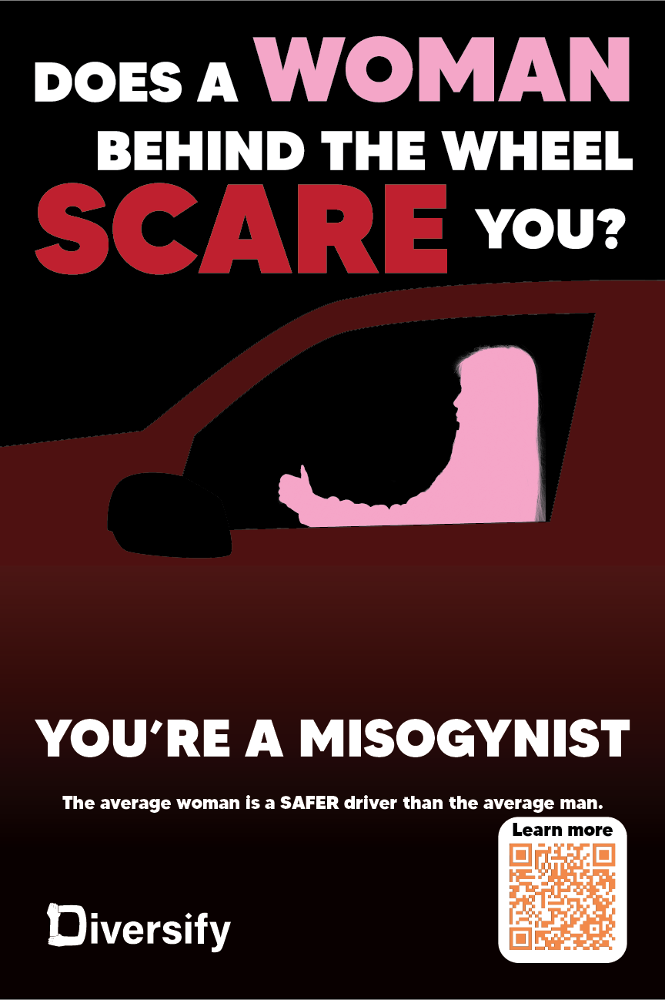

for our project we had the goal to illustrate "Building respect for diversity and removing barriers to racial and social equity".
What we landed on was to create a fictional company (Diversify) that would exist to promote equality and to make a series of posters/adverts that were made to target people's internalized racism, misogony and transphobia. These posters would all include a link that led to our website where you could learn more about these topics and the company itself.
The team
First Years
Second Years
Third Years
The work
I had been given the objective to make one of the posters as an advertisement. I chose to target misogony, specifically the harmful steriotype that women are "bad drivers"
Past this, i worked to communicate with my team to assure that everything would be completed on time, and offered my assistance/opinion when possible.
I also presented the project at the midway point and for our final presentation.
The capyskill
My chosen capyskill is 1.4: Refine and improve the work
I would consider myself to be a level 3 in this chosen capyskill. I am able to reflect on whether or not my design conveys the message that I intended, and i am always open to and often actively asking for feedback, however i struggle at discerning strengths or weakneses in my work, often having to rely on others to get an opinion on the matter.